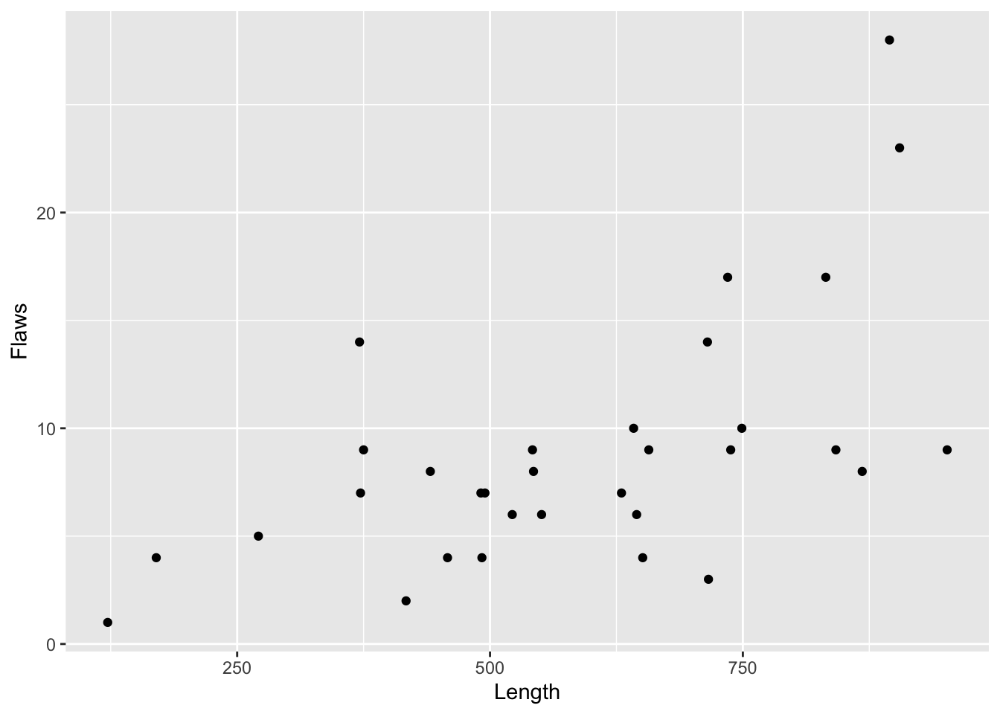
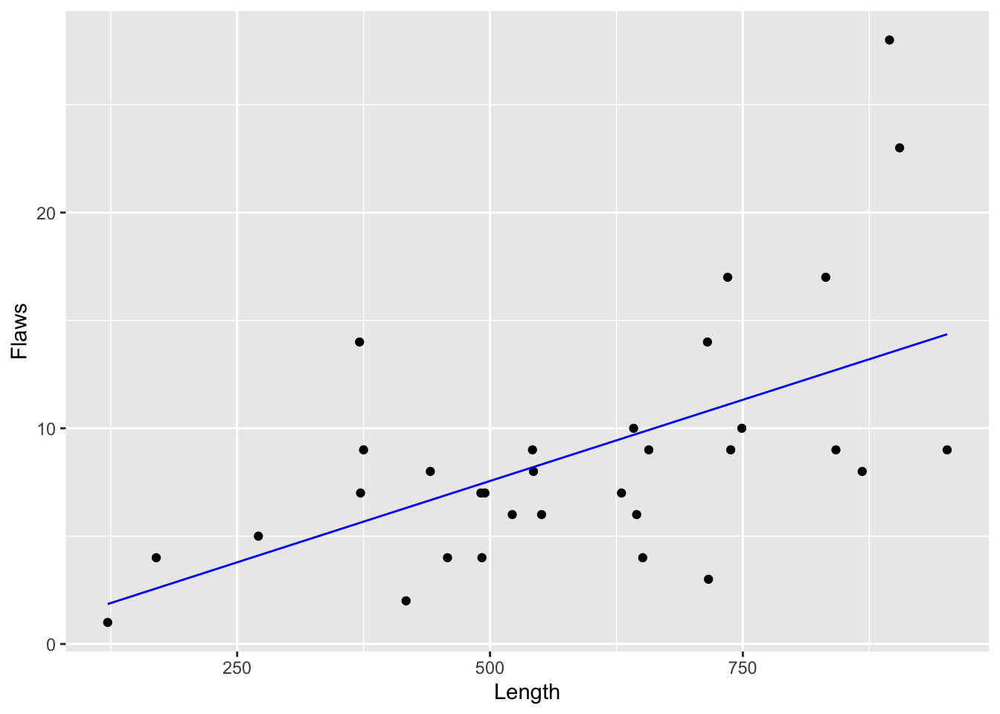

1.3 Count data: Poisson regression
Example: Flaws in cloth
Bissell (1972) provides data on the numbers of flaws found in rolls of cloth of different lengths. These are availanle in thebisselldataframe in thesmpackage, with variablesFlawsandLengths. How should we best estimate the rate of flaws in the manufacturing process?
A very simple model for these data is to assume a constant rate of flaws, with the underlying pattern in the number recorded in each roll driven by multiplying rate by length. The plot below suggests this may be plausible, although there is large variation in individual measurements. As the response variable is a count, a further simple assumption is that this variation is captured by the Poisson distribution, which arises naturally in the context of counting events which occur at a constant rate. A Poisson distribution has a single parameter, namely the mean count, and it has the interesting property that the standard deviation of the distribution is the square root of the same parameter.

If we represent the counts of flaws by \(Y_1, \ldots, Y_n\) and the corresponding lengths by \(x_1, \ldots, x_n\), where \(n=32\) is the number of observations, then this simple model can be written as
\[
Y_i \sim Po(\beta x_i) .
\]
This model can be fitted by the same glm function used in logistic regression, through the argument family = poisson(link = 'identity'). This specifies that the Poisson distribution is to be used to describe the variation. To reflect the simple proportional structure of the model the intercept term, which is assumed to be presdent by default, needs to be omitted and this is achieved by including the term -1 in the mnodel formula. As our simple proportional model is fixed at the origin (length = 0, flaws = 0), we do not need to employ a transformation to ensure that the fitted values for counts are always positive. To illustrate the process of maximum likelihood estimation, the code below also computes and displays the likelihood function, using the Poisson probabilities provided by the dpois function. (The code for the likelihood function is omitted as you are invited to try this as an exercise.)
model1 <- glm(Flaws ~ Length - 1, family = poisson(link = 'identity'), data = bissell)
summary(model1)$coefficients## Estimate Std. Error z value Pr(>|z|)
## Length 0.01510237 0.0008961606 16.8523 1.009133e-63A more standard way of formulating a Poisson regression model is to employ a linear predictor of the usual form, \(\alpha + \beta x\). As this can take negative values, a transformation is needed to ensure that the fitted values from the model remain positive, as befits counts. The exponential transformation is then a natural choice so that the model becomes \(Y_i \sim Po(e^{\alpha + \beta x_i})\). If we let \(x\) denote log(length), then in fact this corresponds to \(Y_i \sim Po(e^{\alpha} x_i^\beta)\). This retains a proportional structure, with rate \(e^\alpha\), but allows some curvature in the shape of the scaling by length. If 1 is a plausible value for \(\beta\) then the model reduces to the earlier simple form. The results below show that this is indeed plausible, as a confidence interval for \(\beta\) includes 1. Similarly, the rate constant \(e^{-4.173} = 0.0154\), which is very close to the estimated rate in the earlier model.
## Estimate Std. Error z value Pr(>|z|)
## (Intercept) -4.1729521 1.1351658 -3.676073 2.368520e-04
## log(Length) 0.9969044 0.1758873 5.667859 1.445929e-08## 2.5 % 97.5 %
## (Intercept) -6.4707481 -2.021167
## log(Length) 0.6624967 1.351929bissell$fitted2 <- exp(model2$coefficients[1]) * bissell$Length^model2$coefficient[2]
ggplot(bissell, aes(Length, Flaws)) + geom_point() +
geom_line(aes(Length, fitted(model2)), col = 'blue')